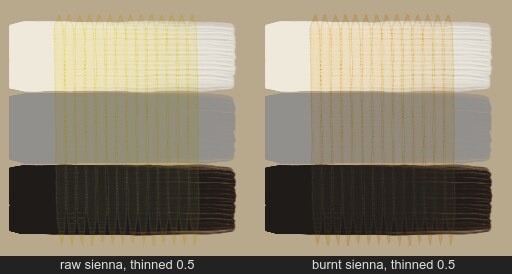
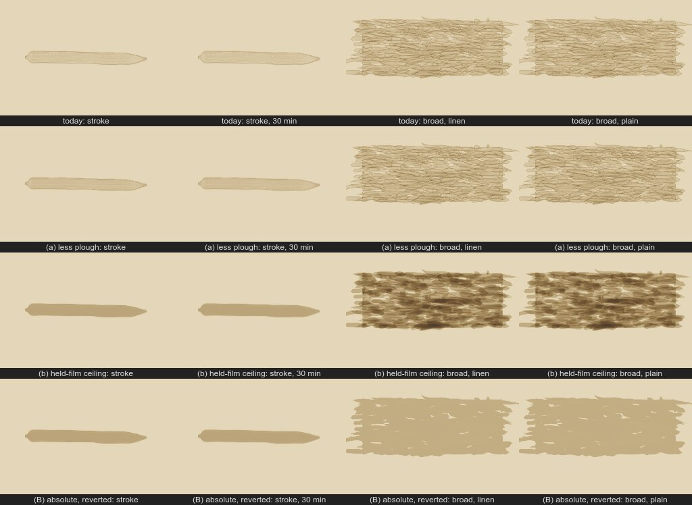
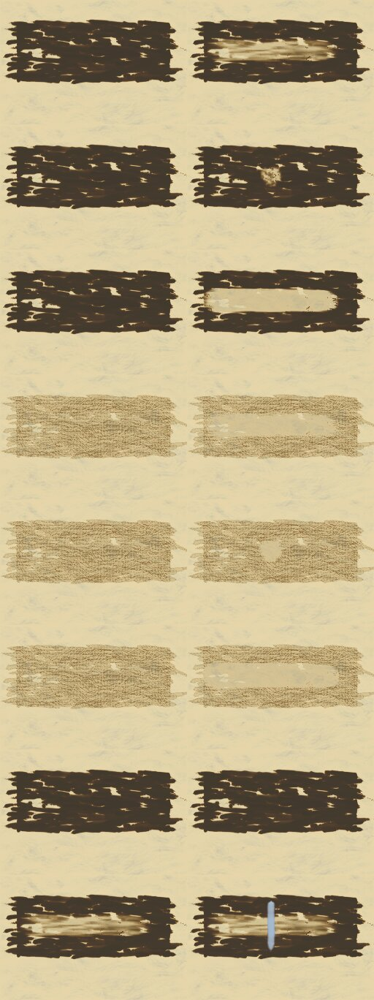
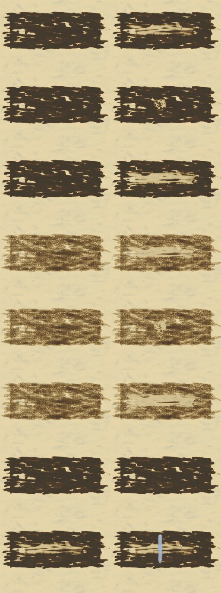
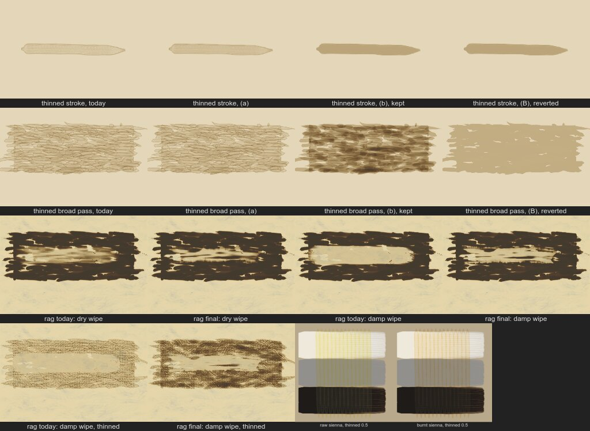

Branch look-experiments (196a673). Full write-up: REPORT.md.
By the standard contrast ratio (brightness over black ÷ brightness over white; lower = more see-through), burnt sienna is the more see-through at every thickness. The old check said the reverse only because burnt sienna is darker.
| raw | burnt | |
|---|---|---|
| 10 µm film | 0.169 | 0.154 |
| card, unthinned | 0.500 | 0.464 |
| card, thinned 0.5 | 0.040 | 0.033 |

Cause confirmed: the bristles plough paint from the middle of the stroke to its edges.
| variant | edges / inside (µm) | card kept, load 0.3 / 0.6 | thinner checks |
|---|---|---|---|
| today | 2.25, 2.13 / 0.96 | 84.4% / 81.4% | all pass |
| (a) less plough | 1.56, 1.39 / 1.35 | 83.5% / 80.3% | one fails |
| (b) cap on what a pixel holds (kept) | 3.00, 2.99 / 2.97, no rim after 30 min | 73.5% / 71.7% | all pass; overlaps stack (blotchy) |
| (B) absolute cap (reverted) | 3.00, 2.99 / 2.97 | 83.5% / 83.2% | four fail; passes don't build up |

Four changes: folds that miss, streaks that survive a damp cloth, ragged edge with more hand wander, a small smear back from the loaded face.
| panel | today (removed / tone left) | new |
|---|---|---|
| dry wipe, wet paint | 90.5% / 47.6% | 79.1% / 52.6% |
| damp wipe, wet paint | 97.2% / 20.8% | 86.5% / 37.0% |
| dry wipe, thinned paint | 68.1% | 73.2% |
| damp wipe, thinned paint | 68.3% | 78.8% |
Rows in both sheets: dry wipe, blot, damp wipe on wet paint; the same three on thinned paint; dry-paint control; a stroke over a wiped area. Left = before, right = after.


